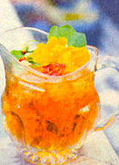

Of the 50 billion cups of tea Americans drink annually, 40 billion of them are iced, according to the Tea Council of the U.S.A., Inc. Nowhere else in the world is so much tea served cold - not a surprising fact, perhaps, given that iced tea was invented in America, at the 1904 St. Louis World's Fair. Legend has it that, due to sweltering heat, fairgoers steered clear of the Far East Tea House. In order to persuade passers-by to sample their wares, the Tea House staff poured hot tea over ice cubes and, the story goes, "iced tea" quickly became the hit beverage of the exposition.
Today, the Tea Council reports, bottled, ready-to-drink iced teas are the fastest-growing new products on grocery store shelves. For iced tea-lovers who crave convenience, that's the good news. The bad news is that most all bottled brands contain more sugar (or high-fructose corn syrup) than tea. Ditto for the powdered mixes. Just read the label on almost any prepackaged variety and you'll find tea listed as the third, fourth, even fifth ingre dient - usually somewhere between citric acid and caramel color. Small wonder, there, that a recent U.S. Department of Agriculture study found that bottled and powdered teas provide little to none of the antioxidants found in freshly brewed teas.
There are a few exceptions, however. Honest Tea, Inc. ( www.honesttea.com ) offers a line of iced teas brewed from whole leaves and barely sweetened with organic sugars or honey. All nine of the company's offerings - among them Earl Grey and Jiangxi Green - boast 17 calories or less per 8-ounce serving (compare this to the 100 or so calories per serving provided by other bottled varieties). The Republic of Tea ( www.republicoftea.com ) also offers seven whole-leaf, unsweetened iced teas, including Mango Ceylon and Jade Mint Green Tea. These tasty teas quench your thirst without leaving a coat of sugar on your tongue.
If you've got the time, however, your best bet for a glass of truly healthful iced tea is a home brew, particularly since tea begins to lose its antioxidant potency shortly after it's steeped. Here's a family favorite - a simple, moderately sweetened recipe borrowed from my mother-in-law Joan (McDermott) Bellwoar. (Note that the sugar equals about half a tablespoon, or about 23 calories, per 8-ounce serving.)
10 tea bags ( I usedecaffeinated Tetley)
4 tablespoons sugar
4 tablespoons lemon juice
1/2 gallon water
Bring water to a rolling boil in a large pot. Turn off heat, then steep the tea bags in the pot for 20 minutes. Stir in the sugar and lemon juice while water is still warn). Pour in ceramic or glass pitcher and refrigerate. Serve over ice.
|
 |
|
|